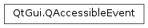

QAccessibleEvent¶
Inherited by: QAccessibleStateChangeEvent, QAccessibleTextCursorEvent, QAccessibleTextSelectionEvent, QAccessibleTextInsertEvent, QAccessibleTextRemoveEvent, QAccessibleTextUpdateEvent, QAccessibleValueChangeEvent, QAccessibleTableModelChangeEvent
Synopsis¶
Virtual functions¶
- def
accessibleInterface()
Detailed Description¶
The
PySide2.QtGui.QAccessibleEventclass is the base class for accessibility notifications.This class is used with
QAccessible.updateAccessibility().The event type is one of the values of
QAccessible.Event. There are a number of subclasses that should be used to provide more details about the event.For example to notify about a focus change when re-implementing
QWidget.setFocus, the event could be used as follows:void MyWidget::setFocus(Qt::FocusReason reason) { // handle custom focus setting... QAccessibleEvent event(f, QAccessible::Focus); QAccessible::updateAccessibility(&event); }To enable in process screen readers, all events must be sent after the change has happened.
-
class
PySide2.QtGui.QAccessibleEvent(iface, typ)¶ -
class
PySide2.QtGui.QAccessibleEvent(obj, typ) Parameters: - iface –
PySide2.QtGui.QAccessibleInterface - typ –
PySide2.QtGui.QAccessible.Event - obj –
PySide2.QtCore.QObject
Constructs a
PySide2.QtGui.QAccessibleEventto notify thatinterfacehas changed. The eventtypedescribes what changed. Use this function if you already have aPySide2.QtGui.QAccessibleInterfaceor noPySide2.QtCore.QObject, otherwise consider the overload taking aPySide2.QtCore.QObjectparameter as it might be cheaper.Constructs a
PySide2.QtGui.QAccessibleEventto notify thatobjecthas changed. The eventtypedescribes what changed.- iface –
-
PySide2.QtGui.QAccessibleEvent.accessibleInterface()¶ Return type: PySide2.QtGui.QAccessibleInterfaceReturns the
PySide2.QtGui.QAccessibleInterfaceassociated with the event.
-
PySide2.QtGui.QAccessibleEvent.child()¶ Return type: PySide2.QtCore.intReturns the child index.
-
PySide2.QtGui.QAccessibleEvent.object()¶ Return type: PySide2.QtCore.QObjectReturns the event object.
-
PySide2.QtGui.QAccessibleEvent.setChild(chld)¶ Parameters: chld – PySide2.QtCore.intSets the child index to
child.
-
PySide2.QtGui.QAccessibleEvent.type()¶ Return type: PySide2.QtGui.QAccessible.EventReturns the event type.
-
PySide2.QtGui.QAccessibleEvent.uniqueId()¶ Return type: long Returns the uniqueId of the
PySide2.QtGui.QAccessibleInterfacerepresented by this event.In case the
PySide2.QtGui.QAccessibleEvent.object()function returns 0 this is the only way to access the interface.
© 2018 The Qt Company Ltd. Documentation contributions included herein are the copyrights of their respective owners. The documentation provided herein is licensed under the terms of the GNU Free Documentation License version 1.3 as published by the Free Software Foundation. Qt and respective logos are trademarks of The Qt Company Ltd. in Finland and/or other countries worldwide. All other trademarks are property of their respective owners.